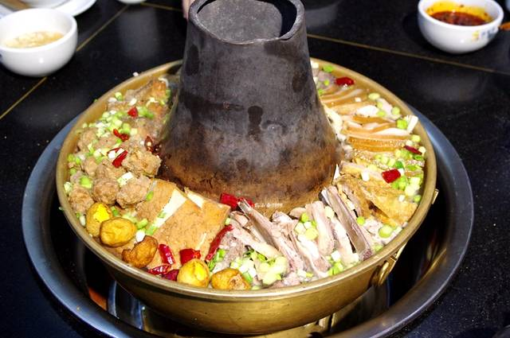
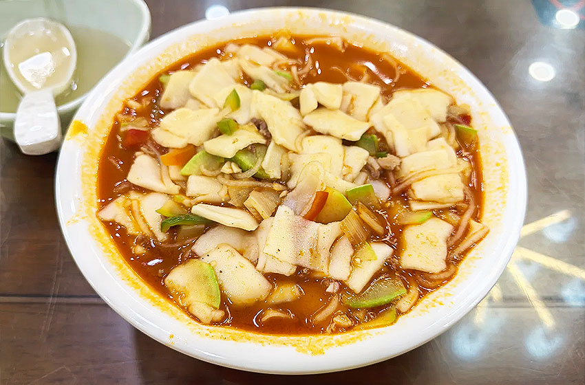
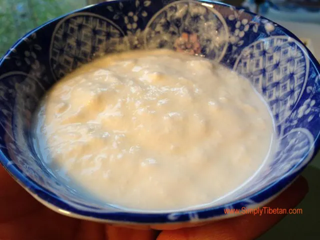

Qinghai Lamb Hot Pot is Xining’s signature winter dish—made with tender local lamb (from Qinghai’s grasslands, known for being non-gamey), root vegetables (potatoes, carrots), and a clear broth. Unlike spicy Sichuan hot pots, Qinghai’s version uses a mild broth (simmered with ginger, star anise, and green onions) to highlight the lamb’s natural flavor. The lamb is cut into thick slices and boiled in the broth until tender—no marinating needed. It’s usually served with dipping sauces (soy sauce, sesame paste, garlic) and side dishes like tofu and mushrooms. Locals love it for warming up on cold plateau days, and it’s often eaten with family and friends—making it a communal, hearty meal.
Lamb: Tender, juicy, and mild—no gamey aftertaste; melts in your mouth.
Broth: Clear, savory, and warm—absorbs the lamb’s flavor and the sweetness of root vegetables.
Dipping Sauce: Creamy (from sesame paste) and salty (from soy sauce)—balances the lamb’s richness.
Overall: Comforting, nourishing, and simple—perfect for plateau winters.
Local Restaurants: 80–120 CNY/person (includes lamb, vegetables, and side dishes).
Hot Pot Chains: 150–200 CNY/person (premium lamb, more side options).
Home-Style Eateries: 60–80 CNY/person (generous portions, simple broth).

Hand-Cut Noodles with Lamb Soup is Xining’s most popular daily staple—thick, chewy noodles (cut by hand from a large dough ball) served in a rich lamb broth. The noodles are cut into wide, flat strips (so they hold more broth) and boiled until tender. The broth is made by simmering lamb bones and meat with onion, ginger, and Sichuan peppercorns for hours—resulting in a deep, savory flavor. It’s usually topped with sliced lamb, green onions, and cilantro—some stalls add pickled mustard greens for a tangy kick. Locals eat it for breakfast, lunch, or dinner—often standing at street stalls to slurp it hot. It’s cheap, filling, and perfect for fueling up on the plateau.
Noodles: Thick, chewy, and slightly elastic—soak up the broth’s flavor.
Broth: Rich, savory, and warm—full of lamb aroma, with a hint of spice from Sichuan peppercorns.
Lamb: Thinly sliced, tender, and lean—adds heartiness to the noodles.
Overall: Simple, satisfying, and comforting—Xining’s “everyday meal.”
Street Stalls: 8–12 CNY/bowl (standard size, with plenty of noodles and lamb).
Local Noodle Shops: 15–20 CNY/bowl (larger portion, with extra lamb or side dishes like lamb skewers).
Downtown Eateries: 12–18 CNY/bowl (cleaner seating, same authentic taste).

Tibetan Yogurt with Brown Sugar is a beloved sweet treat in Xining—made with traditional Tibetan yogurt (fermented in clay pots for 24–48 hours) and topped with homemade brown sugar syrup. Unlike commercial yogurt, Tibetan yogurt is thick, tangy, and unsweetened—its richness comes from the high-fat milk of plateau yaks or cows. The brown sugar syrup balances the tang, adding a warm, caramel-like sweetness without being cloying. It’s often served in small clay bowls (to retain the yogurt’s original flavor) and eaten as a dessert or afternoon snack. Locals believe it aids digestion—perfect for after spicy or heavy meals like lamb hot pot. You’ll find it at Tibetan snack stalls, dessert shops, and even some breakfast spots.
Yogurt: Thick, creamy, and tangy—like Greek yogurt but with a deeper, more complex fermented flavor; no added sugars or preservatives.
Brown Sugar Syrup: Warm, sweet, and slightly smoky—caramel notes cut through the yogurt’s tang.
Overall: Refreshing yet comforting—tangy and sweet in perfect balance, with a pure, natural taste.
Tibetan Snack Stalls: 5–8 CNY/bowl (small clay pot, authentic homemade yogurt).
Dessert Shops: 10–15 CNY/bowl (larger portion, with toppings like red dates or nuts).
Farmers’ Markets: 6–10 CNY/jar (take-home clay jar of yogurt, with separate syrup).